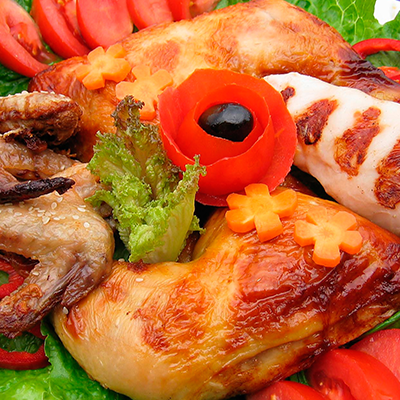

DIETA DE LOS 10 DÍAS

INDICACIONES
Únicamente se puede seguir este plan durante 10 días.
Se consigue adelgazar entre 4 y 5 kilos.
Se pueden consumir las cantidades que uno desee.
A partir de cuarto día se puede añadir un yogur en el desayuno y en la merienda.
Se puede combinar caldo de verduras o gelatina light para saciar el hambre.
Beber dos litros de agua para evitar la deshidratación.
Dieta aconsejada para personas que gozan de buena salud y que no padecen ninguna enfermedad.
Se puede combinar con aerobic para quemar las grasas y facilitar la perdida de kilos.
Dieta recomendada para después de épocas navideñas en las que se tiende a comer más de la cuenta.